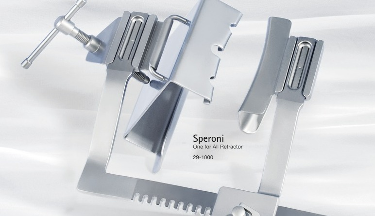
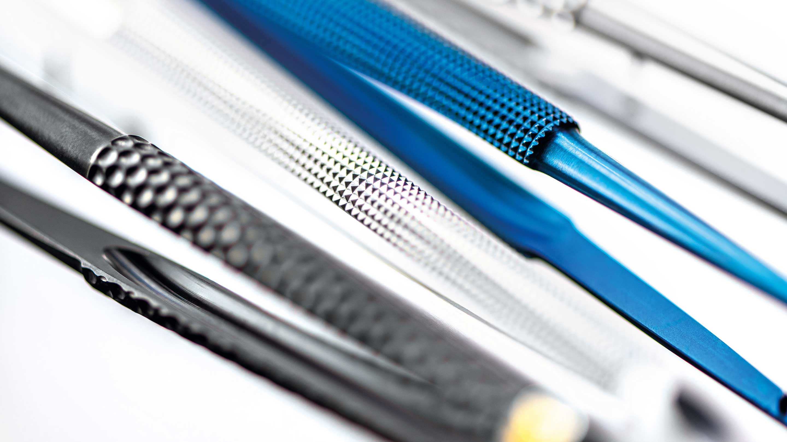
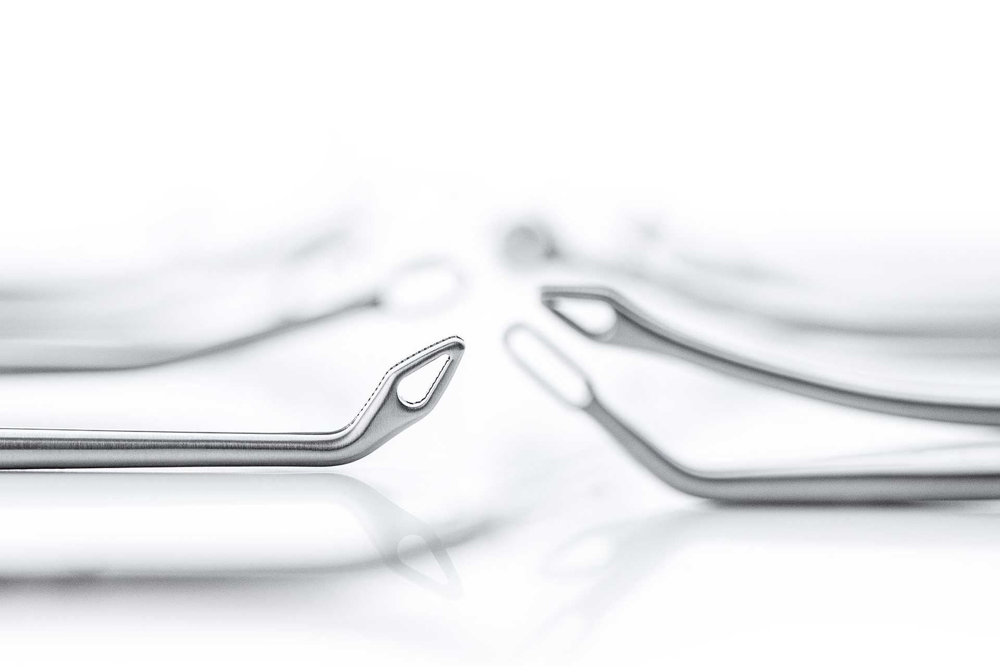
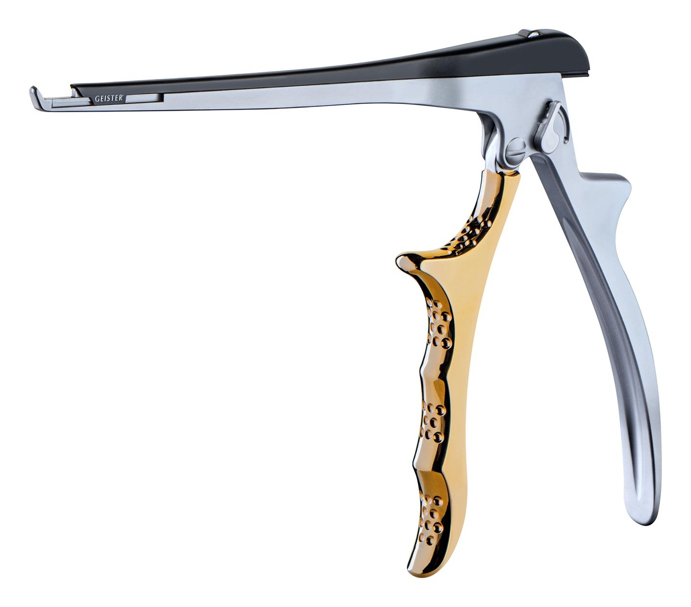
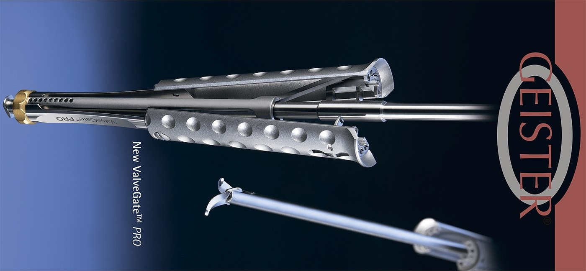
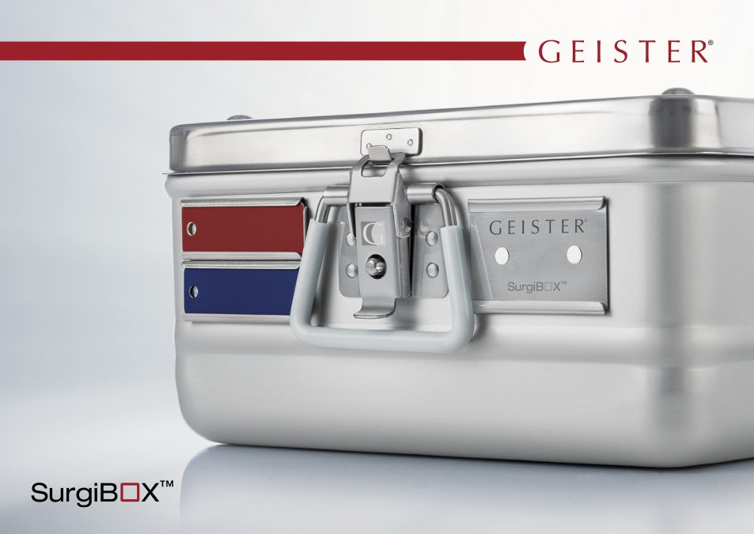

Cardio / Vascular
Кардіо- та судинна хірургія
Ретрактори, судинні затискачі, інструменти для коронарної та клапанної хірургії, системи стабілізації.
Запросити каталогВід базових ручних інструментів до спеціалізованих систем для кардіо-, торакальної, мікро-, нейро- та спінальної хірургії.

Запит можна почати з напряму операції, назви системи, каталожного номера або фото наявного інструменту. Для наборів окремо узгоджуємо склад, кількість, розміри та організацію стерильного циклу.
Сторінка показує основні входи. Повний перелік позицій і каталожні номери надаються за профільним запитом.

Ретрактори, судинні затискачі, інструменти для коронарної та клапанної хірургії, системи стабілізації.
Запросити каталог
Інструменти й ретракторні рішення для малоінвазивної кардіохірургії та відеоасистованої торакальної хірургії.
Запросити каталог
Ронжери, мікроінструменти та спеціалізовані рішення для делікатної роботи в нейро- й спінальному напрямі.
Запросити каталог
Системний напрям інструментів для малоінвазивних клапанних втручань. Склад комплекту уточнюється за задачею.
Запросити систему
Ретракторні системи, гнучкі маніпулятори й компоненти для експозиції робочого поля.
Описати задачу
Контейнери, касети й компоненти для організації, захисту та стерильного циклу інструментальних наборів.
Запросити рішенняЗовнішній вигляд виробу на фото може відрізнятися залежно від артикулу та комплектації. Перед замовленням звіряємо каталожний номер і актуальну специфікацію.
Надішліть вихідні дані — допоможемо структурувати запит на позицію чи комплект.